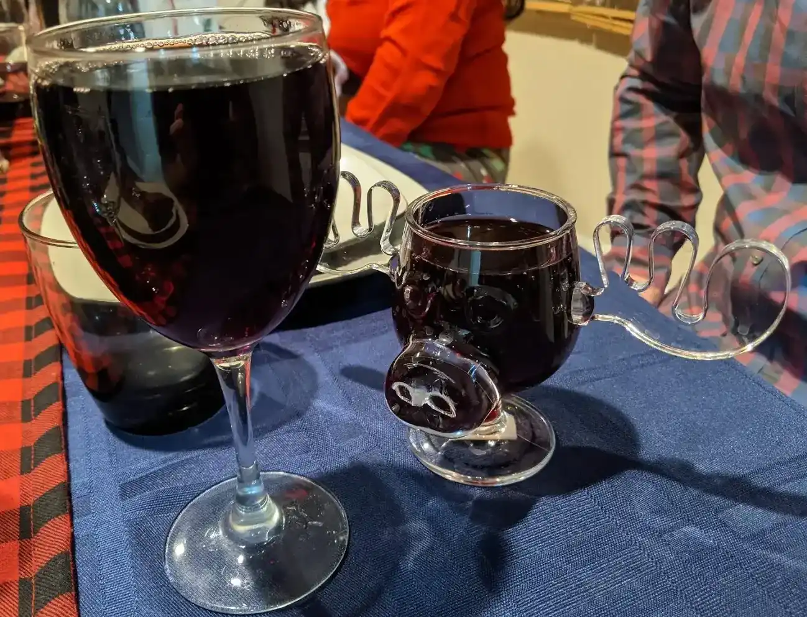

Italian Mulled Wine

- ⏲️ Prep time: 5 min
- 🍳Cook time: 15 min
- 🍽️ Servings: 4
Ingredients
Crushed Ingredients
- 1 star anise
- 1 bay leaf
- 1 pinch rosemary
- 1 pinch peppercorn
- 1 pinch thyme
- 1 pinch red pepper
- 1 pinch fennel seeds
- 1 pinch cloves
- 1 pinch nutmeg
Non-Crushed Ingredients
- 1 bottle Italian red wine
- 1 orange
- 1 lemon
- 1 tbsp honey
- 1 tsp vanilla
- 1 stick cinnamon
- 4 figs (optional)
- 100 ml limoncello (optional)
- 50 ml sweet vermouth (optional)
- 50 ml bourbon, brandy, or cognac (optional)
Directions
- Pour the wine into a stock pot and turn the gas on medium high
- Crush all the “Crushed Ingredients” in a mortar and pestle
- Peel and juice the orange and lemon (toss the peels and juice into the wine but not the white pith)
- When the wine is up to a simmer, immediately bring the gas down to low and pour in all the rest of the ingredients
- Cook on low for at least 15 minutes to infuse the flavors
- Keep the flame on low so the wine stays warm and continues to infuse, but doesn’t bubble / burn off the alcohol
- Feel free to double the recipe or scale any of these ingredients up or down to suite your taste
Contribution
- mfed3 - xmr:
48eEMdYtCQaV5wY7wvmxK6jCxKkia9dgpNTMNT1do7RLWXCwWDgSKjN3kiZ6yHbAuAXWgDGN6imnGT9NPeHWD7zX9hSyHu2